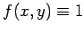
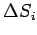
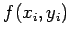
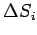
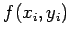

Inhalt Index DeskTop Bronstein

 Integralrechnung Mehrfachintegrale Doppelintegral Begriff des Doppelintegrals
Integralrechnung Mehrfachintegrale Doppelintegral Begriff des Doppelintegrals


Die geometrische Bedeutung des Doppelintegrals liegt neben der Möglichkeit der Berechnung des Inhaltes einer ebenen Fläche im Falle  auch darin, daß es die Berechnung des Rauminhaltes eines zylindrischen Körpers ermöglicht, der vom Flächenstück S in der x,y-Ebene,von einer Zylinderfläche, deren Erzeugende parallel zur z-Achse verläuft, und von dem über S gelegenen Teil der Fläche u =f(x,y) begrenzt wird (s. Abbildung).
Jedes Glied  der Summe (8.135b) entspricht dem Volumen einer prismatischen Säule mit der Grundfläche  und der Höhe . Das Vorzeichen des Gesamtvolumens ist positiv bzw. negativ, je nachdem, ob der betreffende Teil der Fläche u=f(x,y) über oder unter der x,y-Ebene liegt. Wenn er diese Ebene schneidet, dann ist das Volumen eine algebraische Summe der einzelnen Teilvolumina.
der Summe (8.135b) entspricht dem Volumen einer prismatischen Säule mit der Grundfläche  und der Höhe . Das Vorzeichen des Gesamtvolumens ist positiv bzw. negativ, je nachdem, ob der betreffende Teil der Fläche u=f(x,y) über oder unter der x,y-Ebene liegt. Wenn er diese Ebene schneidet, dann ist das Volumen eine algebraische Summe der einzelnen Teilvolumina.